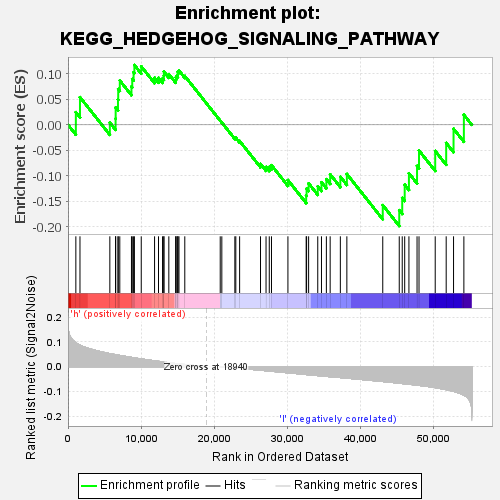

| | | Dataset | VCAN.VCAN.cls#h_versus_l.VCAN.cls#h_versus_l_repos |
| Phenotype | VCAN.cls#h_versus_l_repos |
| Upregulated in class | l |
| GeneSet | KEGG_HEDGEHOG_SIGNALING_PATHWAY |
| Enrichment Score (ES) | -0.19866294 |
| Normalized Enrichment Score (NES) | -0.6935676 |
| Nominal p-value | 0.90606654 |
| FDR q-value | 1.0 |
| FWER p-Value | 1.0 |
Table: GSEA Results Summary

Fig 1: Enrichment plot: KEGG_HEDGEHOG_SIGNALING_PATHWAY
Profile of the Running ES Score & Positions of GeneSet Members on the Rank Ordered List
| SYMBOL | TITLE | RANK IN GENE LIST | RANK METRIC SCORE | RUNNING ES | CORE ENRICHMENT | | 1 | WNT10B | na | 1074 | 0.096 | 0.0248 | No |
| 2 | WNT7B | na | 1639 | 0.086 | 0.0543 | No |
| 3 | LRP2 | na | 5726 | 0.052 | 0.0043 | No |
| 4 | PRKACA | na | 6513 | 0.048 | 0.0122 | No |
| 5 | CSNK1D | na | 6523 | 0.048 | 0.0341 | No |
| 6 | BMP8B | na | 6840 | 0.046 | 0.0496 | No |
| 7 | BMP5 | na | 6873 | 0.046 | 0.0703 | No |
| 8 | BMP2 | na | 7089 | 0.045 | 0.0871 | No |
| 9 | WNT6 | na | 8684 | 0.037 | 0.0752 | No |
| 10 | HHIP | na | 8793 | 0.036 | 0.0901 | No |
| 11 | DHH | na | 8977 | 0.036 | 0.1032 | No |
| 12 | CSNK1E | na | 9086 | 0.035 | 0.1174 | No |
| 13 | BMP6 | na | 10025 | 0.031 | 0.1147 | No |
| 14 | WNT3 | na | 11848 | 0.023 | 0.0923 | No |
| 15 | SMO | na | 12387 | 0.021 | 0.0923 | No |
| 16 | WNT5B | na | 12938 | 0.019 | 0.0910 | No |
| 17 | RAB23 | na | 13116 | 0.018 | 0.0962 | No |
| 18 | WNT1 | na | 13126 | 0.018 | 0.1044 | No |
| 19 | GLI1 | na | 13799 | 0.016 | 0.0995 | No |
| 20 | PTCH2 | na | 14738 | 0.012 | 0.0881 | No |
| 21 | WNT5A | na | 14765 | 0.012 | 0.0933 | No |
| 22 | WNT8B | na | 14911 | 0.012 | 0.0960 | No |
| 23 | WNT16 | na | 15032 | 0.011 | 0.0991 | No |
| 24 | CSNK1G2 | na | 15038 | 0.011 | 0.1042 | No |
| 25 | BMP4 | na | 15188 | 0.011 | 0.1065 | No |
| 26 | PRKACB | na | 15984 | 0.008 | 0.0959 | No |
| 27 | STK36 | na | 20833 | -0.000 | 0.0081 | No |
| 28 | WNT9A | na | 21053 | -0.001 | 0.0044 | No |
| 29 | PRKACG | na | 22835 | -0.005 | -0.0255 | No |
| 30 | SUFU | na | 22967 | -0.005 | -0.0255 | No |
| 31 | WNT4 | na | 23489 | -0.007 | -0.0318 | No |
| 32 | BMP8A | na | 26348 | -0.015 | -0.0768 | No |
| 33 | WNT11 | na | 27104 | -0.017 | -0.0828 | No |
| 34 | FBXW11 | na | 27547 | -0.018 | -0.0825 | No |
| 35 | WNT3A | na | 27849 | -0.019 | -0.0793 | No |
| 36 | CSNK1G3 | na | 30099 | -0.025 | -0.1086 | No |
| 37 | WNT9B | na | 32596 | -0.032 | -0.1390 | No |
| 38 | CSNK1A1 | na | 32656 | -0.032 | -0.1253 | No |
| 39 | IHH | na | 32932 | -0.033 | -0.1151 | No |
| 40 | GSK3B | na | 34182 | -0.036 | -0.1210 | No |
| 41 | WNT2 | na | 34691 | -0.038 | -0.1128 | No |
| 42 | GLI2 | na | 35361 | -0.039 | -0.1068 | No |
| 43 | PRKX | na | 35880 | -0.041 | -0.0973 | No |
| 44 | BMP7 | na | 37274 | -0.044 | -0.1021 | No |
| 45 | WNT7A | na | 38165 | -0.047 | -0.0966 | No |
| 46 | SHH | na | 43079 | -0.060 | -0.1578 | No |
| 47 | WNT10A | na | 45336 | -0.067 | -0.1677 | Yes |
| 48 | WNT2B | na | 45744 | -0.068 | -0.1436 | Yes |
| 49 | CSNK1G1 | na | 46082 | -0.069 | -0.1176 | Yes |
| 50 | PTCH1 | na | 46660 | -0.071 | -0.0952 | Yes |
| 51 | WNT8A | na | 47771 | -0.075 | -0.0807 | Yes |
| 52 | CSNK1A1L | na | 48041 | -0.076 | -0.0505 | Yes |
| 53 | BTRC | na | 50258 | -0.085 | -0.0514 | Yes |
| 54 | GLI3 | na | 51760 | -0.093 | -0.0356 | Yes |
| 55 | ZIC2 | na | 52767 | -0.100 | -0.0078 | Yes |
| 56 | GAS1 | na | 54180 | -0.115 | 0.0197 | Yes |
Table: GSEA details [plain text format]
Fig 2: KEGG_HEDGEHOG_SIGNALING_PATHWAY
Blue-Pink O' Gram in the Space of the Analyzed GeneSet
Fig 3: KEGG_HEDGEHOG_SIGNALING_PATHWAY: Random ES distribution
Gene set null distribution of ES for KEGG_HEDGEHOG_SIGNALING_PATHWAY